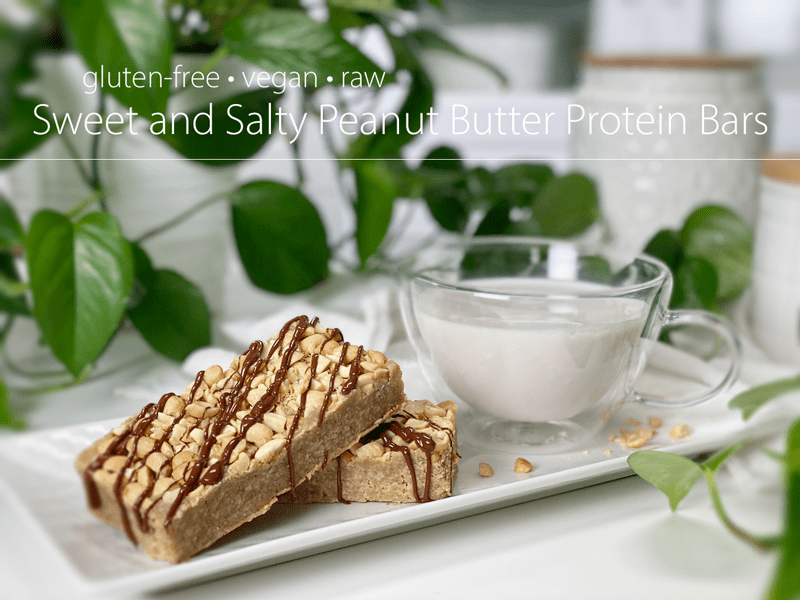
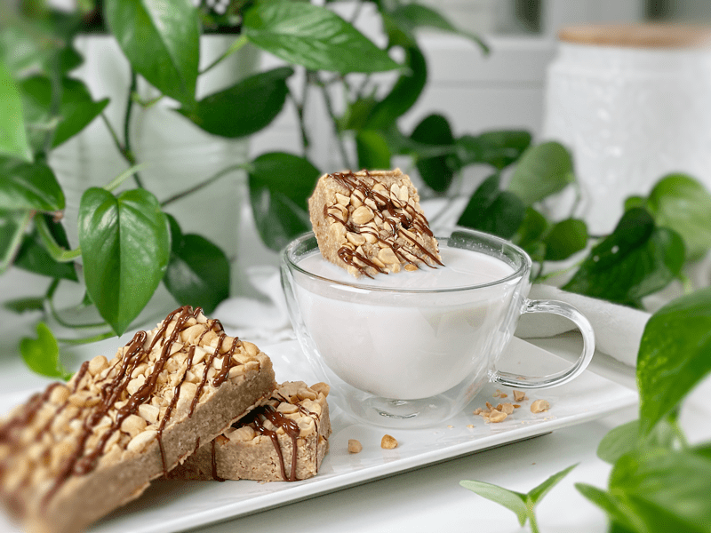
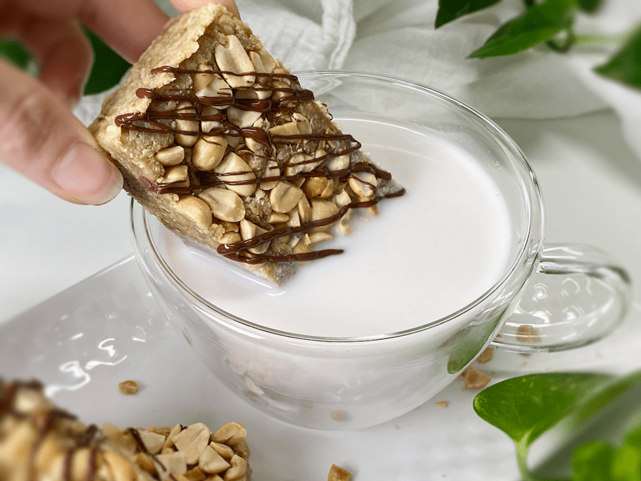

Sweet and Salty Peanut Butter Protein Bars | Raw | Long Haul Series™
These homemade protein bars are absolutely packed full of peanutty flavor, protein, and oaty goodness. I designed this recipe as part of what I call my “Long Haul” series that I created for my stepdad, who is a trucker. They are raw (no baking required), gluten-free, vegan, not overly sweet, and have a wholesome chew that makes your taste buds look forward to the next bite.

Between the ages of 13-16, I would often go trucking with my dad, especially during the holidays. Somehow, I felt my presence sped things up so he could get home quicker–when in fact, I think I really slowed things down. I enjoyed this time with my dad; the endless highways disappearing under the 18-wheeler allowed us to spend “quality time” together.
He used to have a route in Alaska that departed from our hometown of Wasilla, looped around to Fairbanks, and then back home again. Throughout his route, we would stop at all the lodges to deliver food. Without fail, every stop led to me dashing to use the restroom. You see, my dad taught me that if you use a public restroom, you should purchase something from them out of courtesy. To keep expenses down, I would always refill my soda pop cup, which only created a full bladder for the next stop. It was a vicious cycle. After relieving myself and purchasing another refill, I would go help Dad. For hundreds and hundreds of miles, the cycle repeated itself.

Well, on this one particular trip, I’d had about all the soda pop that my little body could handle. We were on a long stretch of highway. The roads were filled with land mines called frost heaves, which led to a VERY rough ride. Dad would be cruising along in his air-glide-suspension-driver’s-seat. I, on the other hand, sat on a block of concrete–well, a slightly padded “felt like concrete” seat–that vibrated to the point of giving me double vision.
I had my pop in hand, and I couldn’t bear to drink anymore, so I told Dad that I was going to toss it out the window (not the cup, just the liquid). Looking straight ahead, hypnotized by the road, Dad told me not to do it, not a good idea. “But Dad, I don’t want any more, I will just roll the window down, hang out the window and pour it as we drive. We don’t even need to stop!” Without looking at me, Dad once again told me not to do it, not a good idea. “But, but, but….” Again without breaking his forward gaze, he yet again told me not to do it, not a good idea.
Pfft, what do dads know anyway? I would show him that my idea was a good idea. I rolled my window down, leaned out, poured my soda pop out. I pulled myself back into the cab. I sat there staring straight ahead with soda dripping down my face, my hair matted in sugary syrup. I just blinked… silently. I sat quietly, afraid to look at my dad. He no longer could contain himself as laughter rolled from deep within his belly. “I told you not to do it, not a good idea.” LOL, We both busted out in laughter. If nothing else, I was always a comic relief for him as we passed endless miles under those 18 wheels. So once again, I dedicate this Long Haul bar to my dad, who spends countless hours, days, weeks, and months on the road. I love you, Dad!
Thanks for giving me the time and space to share that wonderful memory with you. It’s moments like those that I will forever cherish. Before we dive into the recipe, I’d like to go over a few ingredients that are important to point out.

Vanilla Protein Powder Options
- Many protein powders come sweetened, so it will be up to you to adjust the amount of sweetener used. Date paste is a requirement, since it is the binding agent in these bars, but the addition of maple syrup is optional.
- If you have a vanilla protein powder on hand, use it. But if you lack such an ingredient, I have some options for you. Gelatinized Inchi Seed Powder is an amazing option that consists of ONE ingredient; inchi seeds. You can read about them (here). They are packed high in protein–17 grams per tablespoon! The gelatinization process is used to make the powder more easily digestible, while still maintaining its nutritional richness.
- Another option is unsweetened dried coconut. It’s not high in protein, but it gets the job done.
The Amount of Water
- The amount of water needed in this recipe can vary each time you make it. If the batter is dry and crumbly, add 1 tablespoon at a time until it reaches a texture that is thick yet sticks together when pinched.
- The reason the water measurement can vary is due to the water content in your date paste, and it also depends on the viscosity of the peanut butter you are using–some are super thick, where others drip off the spoon. We use roasted peanut butter that comes from a grinding machine in our local grocery store, so it is very thick.
Gluten-Free Rolled Oats
- If you wish to decrease the enzyme inhibitors and increase the number of nutrients being absorbed into your body, you can soak and dehydrate the oats first. It adds another layer of preparation for this recipe, so I will leave it up to you. You can read about how and why (here).
Shapes, Sizes, & Dehydration
- You can create any size or shaped bar that you desire. You can even skip the drying process by keeping them in the fridge or freezer. They won’t hold up to being in your handbag all day, but they still make for a delicious snack.
- Whatever size you decide to make them, think about portion control. These bars are dense in nutrients (carbs, fats, protein, etc.) and therefore they are very filling.
Well, it’s time to let you go so you can hop into the kitchen and rattle some pans. Please be sure to leave a comment below. blessings, amie sue
Ingredients:
Yields 8×8 pan = 12 bars
Base:
Topping:
Preparation:
- Place the oats, protein powder, ground flax, and salt in the food processor, fitted with the “S” blade, and process till it breaks down to a small crumble. Place in a medium-sized bowl.
- If you don’t have any protein powder on hand, you can by using either finely ground dried coconut, or inchi seed powder.
- Back in the food processor, combine the water, peanut butter, maple syrup, and date paste and process till mixed.
- Start by adding 2 tablespoons of maple syrup. Once everything is mixed, you may need to add more if you used inchi powder or dried coconut, or if your protein powder is unsweetened.
- Add the dry ingredients back into the processor and mix everything. This batter is very sticky.
- If the batter feels too dry, add another tablespoon of water (more if needed). This can happen based on the viscosity of the peanut butter and how “wet” the date paste is that you made.
- Line an 8 x 8″ pan with plastic wrap and press the batter into the pan, firmly and evenly. You might need to dampen your fingers with water, so it isn’t so sticky.
- Sprinkle the peanuts and sea salt on top and press them into the batter.
- Place in the freezer for 1 hour to firm up a bit.
- Remove and flip over onto a cutting board. Cut into 12 bars and place on the mesh screens that come with the dehydrator.
- Dry at 145 degrees for 1 hour, then reduce to 115 (F) degrees for 8-10 hours or until desired dryness/moisture is met.
- Drying time depends on several factors:
- It will depend on how thick or thin you make the bars.
- Temperature: The lower the temperature, the longer the drying time. I recommend dehydrating them at 115 degrees (F) to preserve the enzymes and nutrients. For bars, I do like to start it at 145 degrees (F) for 1 hour. Read more about that here.
- Humidity: The higher the humidity is in the room, the longer the dry time will be.
- Optional: Drizzle melted chocolate over the top of each bar. Wait for it to harden before wrapping for storage.
- Wrap individually. Store on the countertop for 1-2 weeks (depending on moisture level left in the bars). Store in the fridge for 2-4 weeks or in the freezer for up to 6 months. Be sure that they are well sealed.
The Institute of Culinary Ingredients™
- Dates are a fantastic ingredient for raw food recipes. Click (here) to read why.
- What is Himalayan pink salt, and does it matter? Click (here) to read more about it.
- Are oats gluten-free? Yes, read more about that (here).
- Are oats raw? Yes, they can be found. Click (here) to learn more.
- Do I need to soak and dehydrate oats? Not required but recommended. Click (here) to see why.
- Learn how to grind your flax seeds for ultimate freshness and nutrition. Click (here).
Culinary Explanations:
- Why do I start the dehydrator at 145 degrees (F)? Click (here) to learn the reason.
- When working with fresh ingredients, it is essential to taste test as you build a recipe. Learn why (here).
- Don’t own a dehydrator? Learn how to use your oven (here). I do, however honestly believe that it is a worthwhile investment. Click (here) to learn what I use.
© AmieSue.com